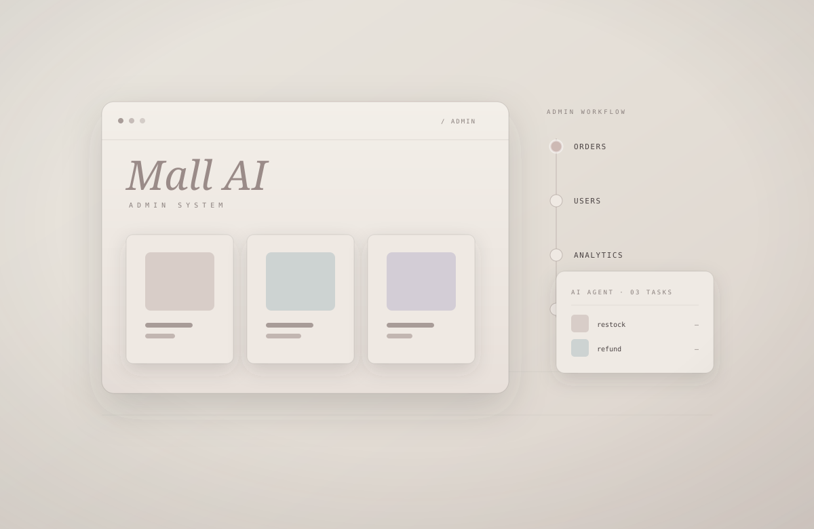
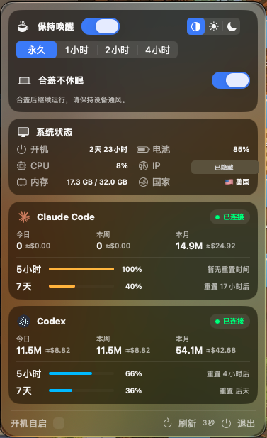
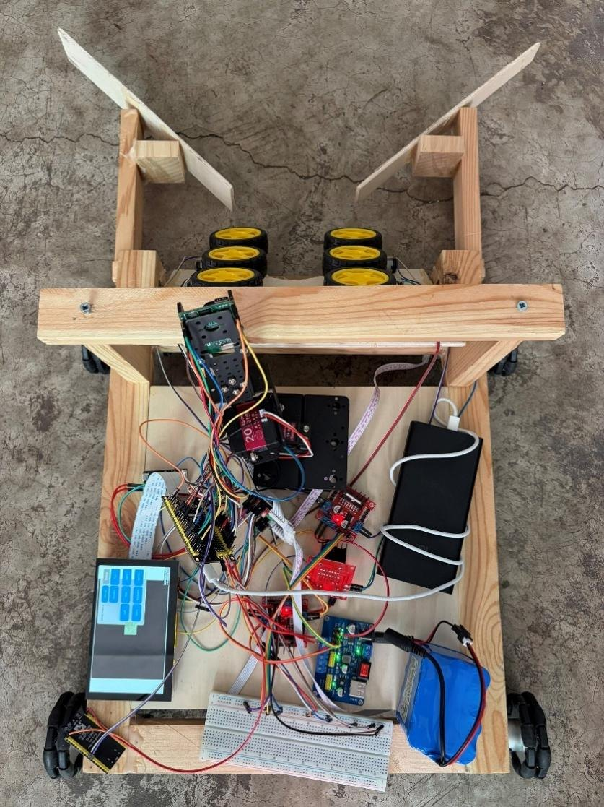
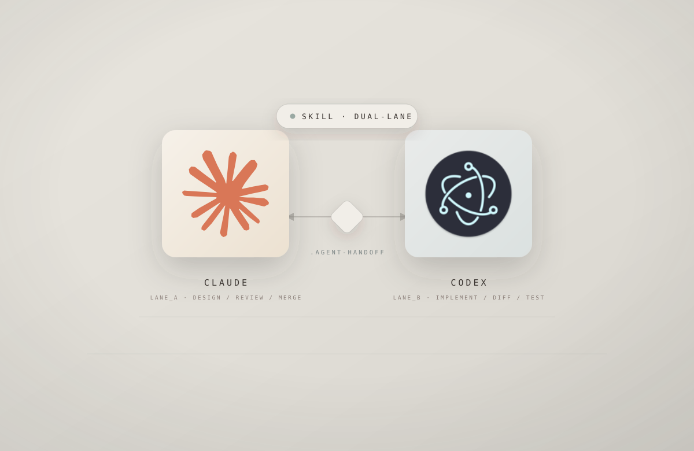
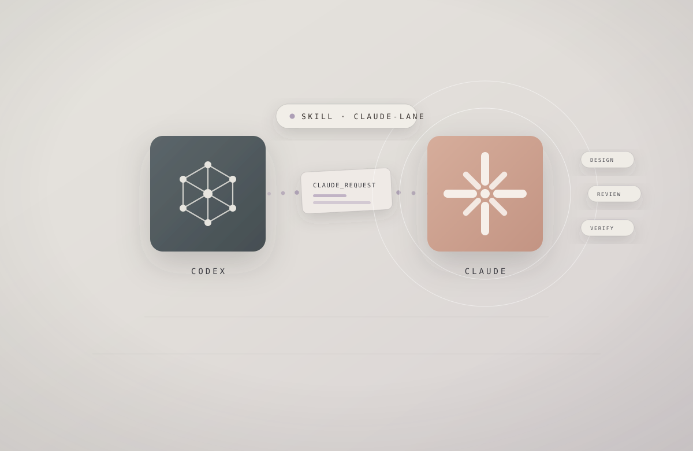

06 / AI SYSTEMADMIN DASHBOARD / E-COMMERCE
商城 xAI 智能后台管理系统
AI 驱动的电商后台管理系统，整合商品、订单与用户数据，由智能体辅助运营决策与流程自动化。
- 商品 / 订单 / 用户统一管理
- AI 智能数据看板与分析
- 多角色权限与审批流程
SYSTEM_TIME: 00:00:00 / OPERATOR_ECOKATER
我是杜泽浩，一名电子信息工程专业应届生，具有嵌入式控制、机器视觉、无线通信和 AI Agent 工程工具开发经验。
连接感知、控制、通信与软件，
完成从原型到系统实现。
涵盖嵌入式控制、机器视觉、无线通信、macOS 原生开发与多 Agent 协作工具。

原生 macOS 菜单栏仪表盘，集中查看 AI 编程额度、Token 用量与电脑运行状态。

能够自动识别、追踪并拾取散落网球的移动机器人，支持触屏与网页遥控。

让 Claude 自动调用 Codex 完成独立编码任务，并由 Claude 统一设计、审查与合并。

让 Codex 请求 Claude 提供设计、代码审查、合并判断与最终验证。
本地优先、长期记忆驱动的数字生命与 AI 陪伴平台，支持 Web、桌面与移动端。

AI 驱动的电商后台管理系统，整合商品、订单与用户数据，由智能体辅助运营决策与流程自动化。